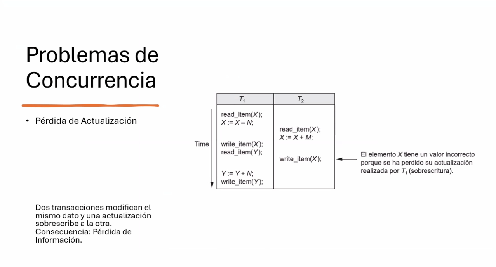
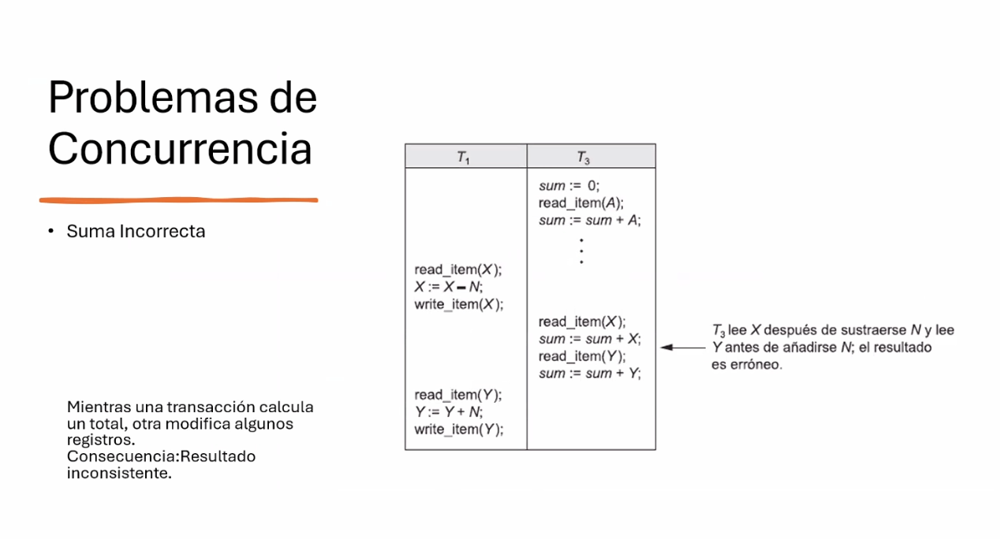
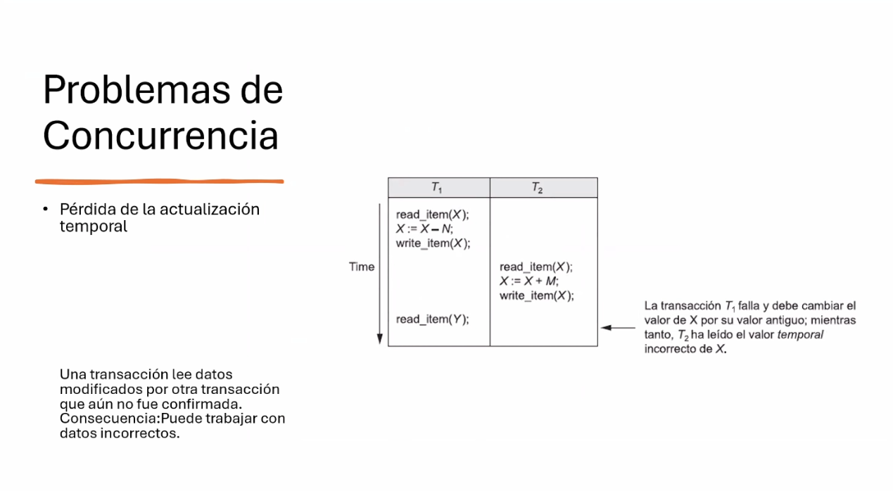

Lección 42 · Unidad 6 · Administración de transacciones · Opcional
Cuando dos transacciones tocan el mismo dato
Por qué un DBMS multiusuario necesita controlar la concurrencia, y los problemas que aparecen si no lo hace. Son ejemplos de manual y se reconocen fácil en un choice.
El docente no nombró este tema entre lo que entra al 2do parcial. Está acá por si aparece
algún concepto suelto en el choice. La base son las capturas de la clase
(raw/Clase Transacciones (capturas)/); todavía no tenemos el PPT.
01Monousuario y multiusuario
"Un DBMS es monousuario si sólo lo puede utilizar un usuario a la vez, y es multiusuario si varios usuarios pueden utilizar el sistema simultáneamente."
Los multiusuario tienen problemas de concurrencia, y para eso disponen de un módulo de procesamiento concurrente con un planificador de transacciones. El slide distingue dos formas de procesar:
| Procesamiento | Qué pasa | En el gráfico del slide |
|---|---|---|
| Interpolado (intercalado) | Una sola CPU alterna entre transacciones: un rato A, un rato B, otra vez A… | A y B entre t1 y t2 |
| Paralelo | Varias CPU ejecutan transacciones a la vez de verdad | C en CPU1 y D en CPU2, entre t3 y t4 |
02read_item y write_item
Para estudiar la concurrencia, cada transacción se reduce a dos operaciones sobre un dato
X:
read_item(X): trae el valor de X de la base a una variable de la transacción.write_item(X): guarda el valor de esa variable en X, en la base.
Entre las dos, la transacción hace cuentas en su memoria (X := X − N). Ese cálculo
no lo ve nadie más hasta el write_item. Todos los problemas salen de lo que
hace otra transacción en ese intervalo.
03Los tres problemas del slide
Pérdida de actualización

"Dos transacciones modifican el mismo dato y una actualización sobrescribe a la otra. Consecuencia: pérdida de información."
Suma incorrecta

"Mientras una transacción calcula un total, otra modifica algunos registros. Consecuencia: resultado inconsistente."
Pérdida de la actualización temporal (lectura sucia)

"Una transacción lee datos modificados por otra transacción que aún no fue confirmada. Consecuencia: puede trabajar con datos incorrectos."
1. El resumen dice que en la suma incorrecta T3 lee "X antes de la modificación e Y
después". El slide dice lo contrario: X después de restarle N, Y antes de sumarle N.
El efecto es el mismo (un total que nunca existió), pero si el choice cita el slide, vale
el slide.
2. El resumen explica la lectura sucia como una diferencia entre los buffers y el
disco. Lo que importa es otra cosa: se leyó un dato que no estaba confirmado (sin
COMMIT).
04Lecturas sucias, no repetibles y fantasma
El slide "¿Por qué es necesaria la serialización?" nombra los problemas con otros tres nombres. Son los que aparecen en cualquier motor comercial:
| Problema | Definición del slide | Palabra clave |
|---|---|---|
| Lectura sucia | Una transacción lee datos modificados por otra que aún no confirmó los cambios. | no confirmado |
| Lectura no repetible | Los datos leídos cambian porque otra transacción los modificó durante el proceso. | leo dos veces el mismo dato y cambió |
| Lectura fantasma | Aparecen filas nuevas inesperadas porque otra transacción insertó datos mientras se ejecutaba la consulta. | filas nuevas |
En la no repetible cambia el valor de una fila que ya había leído (alguien hizo un UPDATE). En la fantasma cambia la cantidad de filas (alguien hizo un INSERT). La lectura sucia es la misma idea que la "actualización temporal" de la sección 03.
05Práctica
T1 y T2 leen el mismo saldo de 100. T1 le resta 30 y escribe 70; después T2 le suma 50 y escribe 150. ¿Qué problema es?
Una transacción calcula el total de todas las cuentas mientras otra transfiere plata entre dos de ellas. ¿Qué puede pasar?
¿Qué define a una lectura sucia?
Una consulta cuenta los pacientes de un médico dos veces en la misma transacción y la segunda vez da uno más, porque otra transacción insertó un turno. ¿Qué es?
Una sola CPU alterna entre dos transacciones, un rato cada una. ¿Cómo se llama ese procesamiento?
Capturas de la clase de transacciones, en raw/Clase Transacciones (capturas)/
(01 a 04, 13). Los ejemplos de T1, T2 y T3 son de Elmasri & Navathe, cap. 17
("¿Por qué es necesario el control de la concurrencia?").